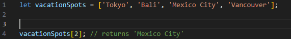
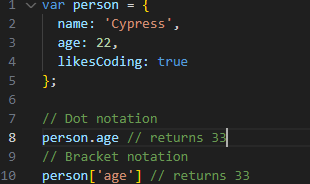
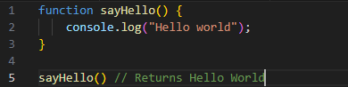

how does JavaScript fit?
We know now that HTML is like building blocks. Imagine it's a shop, so It's the building and all the shelves on the inside then CSS comes along. and makes everything more pretty and puts the shelves where they need to be and adds color to the whole place. Now we have JavaScript this comes in. and adds The employee makes sure they're stacking the shelves and allowing You buy things. That's the relationship between HTML, CSS, and JavaScript.
Control flow & Loops
First we'll talk about control flow. This is pretty simple as we see it. quite a lot in our lives; an example is if you've ever filled out a form to Get your tax code. There are lots of questions you've got to follow, whether or Whether you choose yes or no determines the "flow" you go on; this comes into coding as well Whether something is false or true will determine the way it flows. Now let's look at loops. I'm still trying to grasp the idea of loops. myself, but from what I understand, you use them often. I think a real-world The loop that happens is with your music playlist as long as there's a song. That's available to play, and it will keep going until you run out of music. Then the loop ends.
The DOM
The Document Object Model, or DOM for short, is used on the browser to see How the website works: you can view everything from the HTML to the JS. as well as grab and change things; for example, you could change the color. of a heading to red if you wanted, but don't worry, it only changes things. client-side, so on your computer only, and when you refresh it, it all gets reverted back to how it was originally
The diffrence in taking data from an array or object
arrays
Arrays are pretty straight foward theyre essentially just lists of items that can go on infinitly if you wanted, accessing the information stored in an array is rather simple but can be a little confusing youll be able to see in the picture below but if i wanted to grab the third item in the list we call upon 2 because we we count in coding we start at 0
objects
You'd want to use an object if you're saving something that you want to hold. Some sort of characteristics; during this sprint we got to make a cafe in At that cafe, we had to make objects for the things we wanted to sell. reason We used an object instead of an array because we wanted to show how much stock we had and how much it cost, accessing information from a The object looks a little different to an array; we use either dot or bracket. notations I personally think Dot looks better, but either one works.
What are functions?
Functions are a block of code used to perform a specific task a very very simple example of this is hello world
